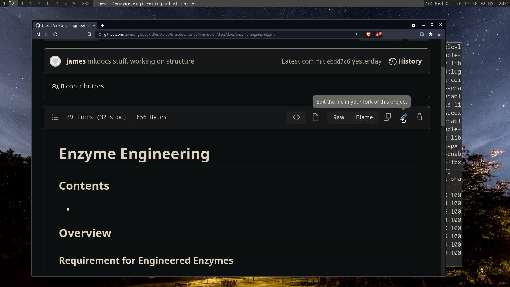
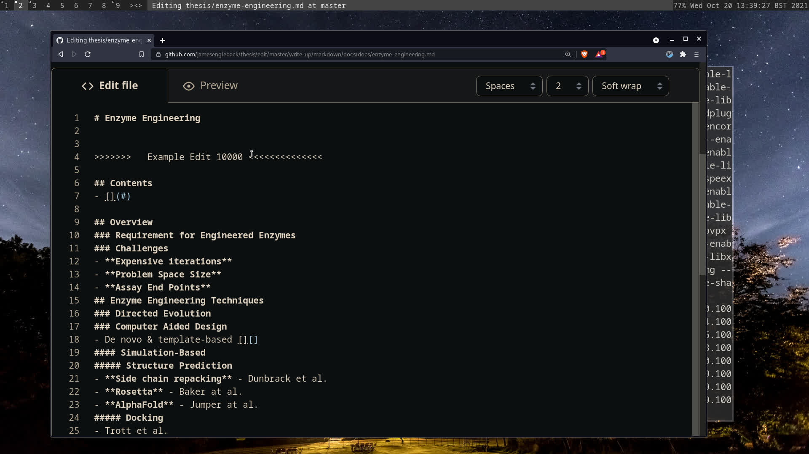
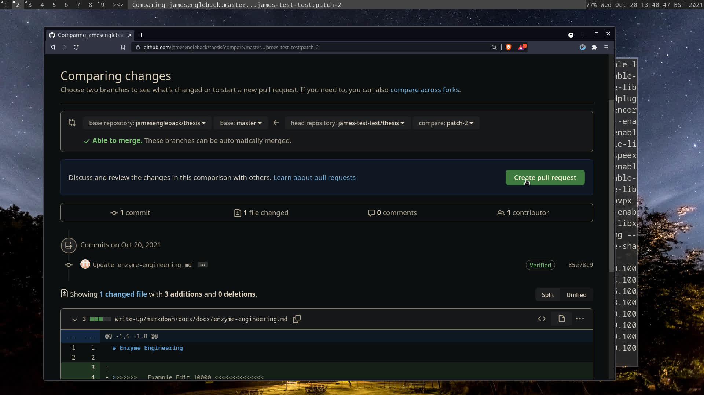

Contributing
Contents
Overview
This document outlines how to contribute comments and suggested changes to this thesis. The thesis is hosted at jamesengleback.xyz and the working repository is at https://github.com/jamesengleback/thesis. For my convenience it’s being written in markdown - an easy to write, interconvertible text format. My markdown is converted to html for your browser by mkdocs.
Here are some good markdown cheatsheets:
- https://www.gov.uk/guidance/how-to-publish-on-gov-uk/markdown
- https://www.markdownguide.org/
- https://guides.github.com/features/mastering-markdown/
I’m managing versions of this project with git because it lets me track suggested merges etc from multiple sources. The complication is that anyone who wants to help will need to know how to do it.
Here is a quick guide on how to contribute changes, suggestions etc:
Git & Pull Requests
For most, the convenient way to suggest changes to the thesis is via the browser. Here’s an example of suggesting a change to one of the markdown files from a test account.
Login/Sign Up at github.com

Find My Thesis Repository at https://github.com/jamesengleback/thesis

Find the File You Want to Amend, Comment Etc.
The Markdown files I’m working in are currently down the file system at thesis/write-up/markdown/docs/.

Open The Editor (pencil icon)

Edit!

Click Propose Changes at the foot of the Editor Page (hint: it’s all green buttons from here)
Comments here are useful!

Confirm with Create Pull Request

Confirm Again with Create Pull Request

Done!
Track the pull request and talk about it. You’ll be notified